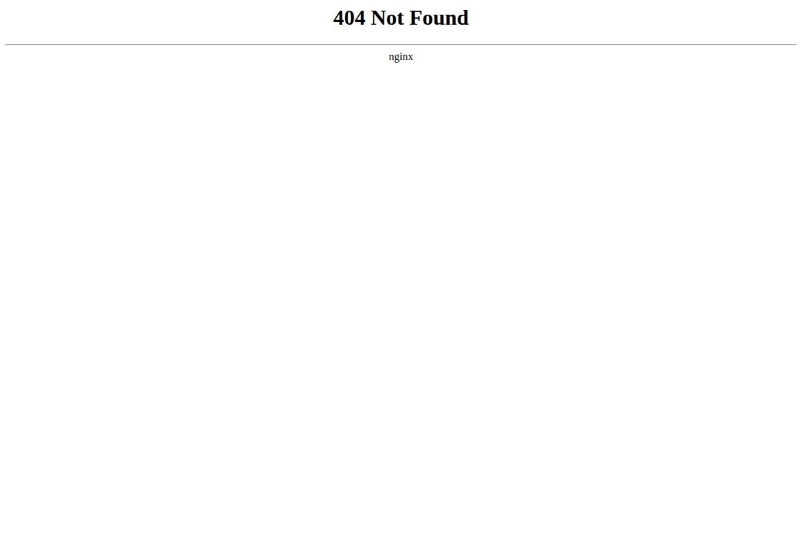

📊 爆仓热力图

每日加密市场情绪深度报告
Date: 2026-05-24 08:00 UTC+8 | Analyst: Researcher
=== 第一段：叙事与风险面 ===
白宫改口称"伊朗和平协议可能需数日而非周日晚"导致BTC从$77,000回落至$76,400。(multi-source, analysis)
24h变化: 情绪 +15(↗+5) | BTC ↗1.3% | ETH ↗1.9% | VIX 16.7(正常) | 成交量 ↘31% | 爆仓 ↘53%
信息 1: Saylor公开表示"本周买了债券而非BTC"。(BlockBeats, Coinglass)
信息 2: 白宫改口称"和平协议可能需数日"，但Iran最高领袖已批准协议大纲。(BlockBeats)
• 周一：伊朗协议宣布窗口
• 周四：BTC 月度期权到期




=== 第二段：数据与技术面 ===
整体评分: +15/100 (↗+5 较昨日)
· BTC: $76,349 +1.2% (Binance, CoinGecko)
· 宏观看板: SPX 7,473 +0.37% | VIX 16.7 正常 (Yahoo Finance, BlockBeats)
HYPE +11%, NEAR +10%, RAIL +73%